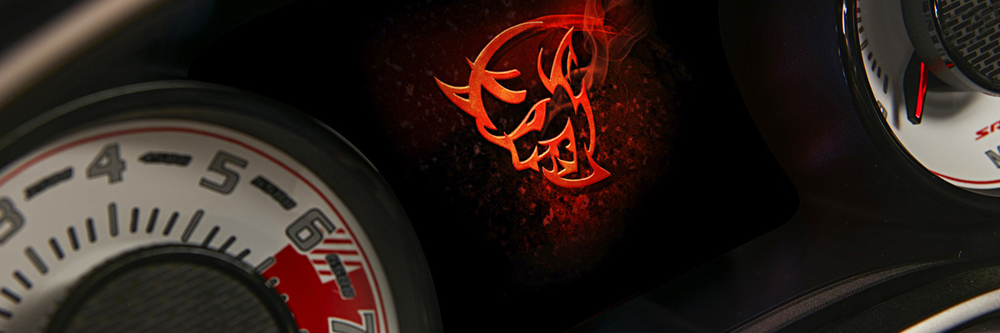

We’ve logged many street and track miles in Dodge’s super sedan; now let’s take a closer look at how the various modes make the car surprisingly versatile
I have read both sides of the Sport Mode-MDS debate. “Yes, Sport Mode absolutely DOES defeat MDS.” “No, Sport Mode absolutely does NOT defeat MDS.” Are there any 1320 owners who drive in Drag Mode to defeat MDS?
It doesn't seem to be the mileage so much as spending too much time at low RPM, like when idling, that'll kill these lifters/cams at 100-150k, some even earlier (although that's a rare exception).
muscle car has five drive modes: Track, Sport, Custom, Default and Eco. They’re displayed on the 8.4-inch touchscreen by pressing the “SRT” button located between the volume and tuning knobs.
Each Challenger SRT drive mode has a subset of system tuning: Power (500 or 700 hp), Transmission, Paddle Shifters, Traction and Suspension.
More important than its 707 horsepower (gasp, I know) is the Dodge Charger SRT Hellcat’s huge swing in adjustability. With the push of a button, the Hellcat transforms from a tire-frying 204-mph supercharged sedan to a remarkably sedate family cruiser capable of fitting three child seats in the backseat – few cars have such a Jekyll and Hyde personality. We’ve logged many street and track miles in Dodge’s super sedan; now let’s take a closer look at how the various modes make the car surprisingly versatile.
muscle car has five drive modes: Track, Sport, Custom, Default and Eco. They’re displayed on the 8.4-inch touchscreen by pressing the “SRT” button located between the volume and tuning knobs. Each Challenger SRT drive mode has a subset of system tuning: Power (500 or 700 hp), Transmission, Paddle Shifters, Traction and Suspension. Track and Sport don’t cover every imaginable driving style, so during casual driving or track testing, I frequently use Custom mode, which is where the magic happens. In there, each system is adjustable for a truly customized driving experience.
The Hellcat’s eight-speed automatic transmission has three settings: Track, Sport and Street. In Track mode, the transmission shifts hard and fast enough to shock the tires into spinning on the second gear shift, which we’ve experience in our testing (and which I’m pretty sure cost me a 10-second pass in stock configuration). Track mode’s aggressive shift schedule also winds out gears to keep engine speed high and in the power band for road-course driving. Sport mode is slightly less aggressive and Street mode is well-suited for casual cruising. The transmission has its own tuning in Eco mode that upshifts quicker for better fuel economy and also starts in second gear.
Of all the adjustable systems, the suspension makes the biggest swing from least to most comfortable. Track mode will rattle your teeth fillings on broken pavement and is best suited to a nice, smooth-handling course. It’s too much on the street, even on twisty backroads. Sport is a good compromise and its sporty feel has relatively flat cornering, though there’s no hiding how much weight you’re throwing around (a lot: 4,575 pounds). Street mode is the most pillowy of the settings and the best choice for highway driving and trips to the dragstrip. If you watch our Charger SRT Hellcat dragstrip video, you can see how much space grows between the front tire and front fender as the softer damper settings let the rear squat to help plant the back tires.
Traction and stability-system settings are a bit more mysterious because their effectiveness is not quite as obvious as transmission or suspension tuning unless you’re driving sideways at wide-open throttle. Track, Sport and Street settings combine the balance of stability and traction control. Track mode has the least amount of stability control that lets the car handle freer than other modes, though traction control is still active. Sport mode turns off traction control for straight-line romps but keeps stability control active, though with less intrusion than the super-safe Street mode. Sport mode is our preference during dragstrip testing so it’s not intrusive off-the-line, but it also leaves us a safety net in case things get sideways.